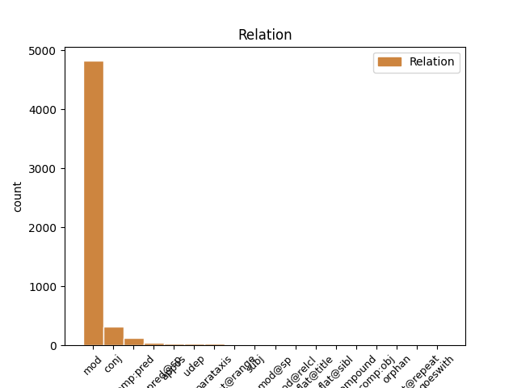
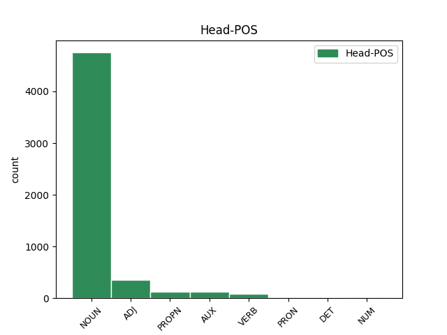
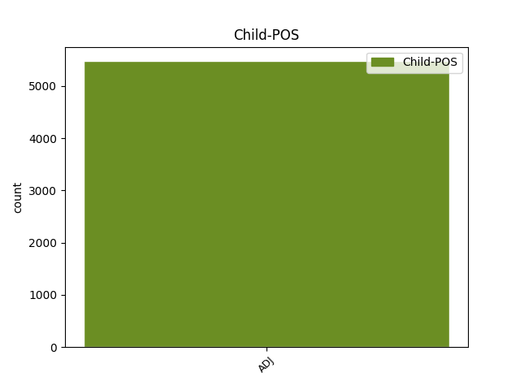

Distribution of features within this leaf



Agreement Rules sorted by frequency.
- When the dependent token is the modifer(mod) of the head token, and the head token is NOUN and the dependent token is ADJ.
1 Під _ _ _ _ 0 _ _ _
2 час _ _ _ _ 0 _ _ _
3 показу _ _ _ _ 0 _ _ _
4 у _ _ _ _ 0 _ _ _
5 США _ _ _ _ 0 _ _ _
6 , _ _ _ _ 0 _ _ _
7 що _ _ _ _ 0 _ _ _
8 розпочався _ _ _ _ 0 _ _ _
9 18 _ _ _ _ 0 _ _ _
10 вересня _ _ _ _ 0 _ _ _
11 2015 _ _ _ _ 0 _ _ _
12 року _ _ _ _ 0 _ _ _
13 , _ _ _ _ 0 _ _ _
14 протягом _ _ _ _ 0 _ _ _
15 першого _ _ _ _ 0 _ _ _
16 тижня _ _ _ _ 0 _ _ _
17 фільм _ _ _ _ 0 _ _ _
18 був _ _ _ _ 0 _ _ _
19 показаний _ _ _ _ 0 _ _ _
20 у _ _ _ _ 0 _ _ _
21 545 _ _ _ _ 0 _ _ _
22 кінотеатрах _ _ _ _ 0 _ _ _
23 і _ _ _ _ 0 _ _ _
24 зібрав _ _ _ _ 0 _ _ _
25 7 222 035 _ _ _ _ 0 _ _ _
26 $ _ _ _ _ 0 _ _ _
27 , _ _ _ _ 0 _ _ _
28 що _ _ _ _ 0 _ _ _
29 на _ _ _ _ 0 _ _ _
30 той _ _ _ _ 0 _ _ _
31 час _ _ _ _ 0 _ _ _
32 дозволило _ _ _ _ 0 _ _ _
33 йому _ _ _ _ 0 _ _ _
34 зайняти _ _ _ _ 0 _ _ _
35 5 5 ADJ Mlonsa Case=Acc|Gender=Neut|Number=Sing|NumType=Ord|Uninflect=Yes 36 mod _ Id=39rk|LTranslit=5|Translit=5
36 місце місце NOUN Ncnsan Animacy=Inan|Case=Acc|Gender=Neut|Number=Sing 0 _ _ _
37 серед _ _ _ _ 0 _ _ _
38 усіх _ _ _ _ 0 _ _ _
39 прем'єр _ _ _ _ 0 _ _ _
40 . _ _ _ _ 0 _ _ _
1 Ми _ _ _ _ 0 _ _ _
2 покладаємося _ _ _ _ 0 _ _ _
3 на _ _ _ _ 0 _ _ _
4 ваші _ _ _ _ 0 _ _ _
5 внески _ _ _ _ 0 _ _ _
6 , _ _ _ _ 0 _ _ _
7 щоб _ _ _ _ 0 _ _ _
8 виконувати _ _ _ _ 0 _ _ _
9 нашу _ _ _ _ 0 _ _ _
10 місію _ _ _ _ 0 _ _ _
11 зі _ _ _ _ 0 _ _ _
12 збереження _ _ _ _ 0 _ _ _
13 Інтернету _ _ _ _ 0 _ _ _
14 відкритим відкритий ADJ Ap-msif-ep Aspect=Perf|Case=Ins|Degree=Pos|Gender=Masc|Number=Sing|VerbForm=Part|Voice=Pass 0 _ _ _
15 і _ _ _ _ 0 _ _ _
16 вільним вільний ADJ Afpmsif Case=Ins|Degree=Pos|Gender=Masc|Number=Sing 14 conj _ Id=342u|LTranslit=viľnyj|SpaceAfter=No|Translit=viľnym
17 . _ _ _ _ 0 _ _ _
1 Під _ _ _ _ 0 _ _ _
2 час _ _ _ _ 0 _ _ _
3 показу _ _ _ _ 0 _ _ _
4 у _ _ _ _ 0 _ _ _
5 США _ _ _ _ 0 _ _ _
6 , _ _ _ _ 0 _ _ _
7 що _ _ _ _ 0 _ _ _
8 розпочався _ _ _ _ 0 _ _ _
9 18 _ _ _ _ 0 _ _ _
10 вересня _ _ _ _ 0 _ _ _
11 2015 _ _ _ _ 0 _ _ _
12 року _ _ _ _ 0 _ _ _
13 , _ _ _ _ 0 _ _ _
14 протягом _ _ _ _ 0 _ _ _
15 першого _ _ _ _ 0 _ _ _
16 тижня _ _ _ _ 0 _ _ _
17 фільм _ _ _ _ 0 _ _ _
18 був бути AUX Vapis-sm Aspect=Imp|Gender=Masc|Mood=Ind|Number=Sing|Tense=Past|VerbForm=Fin 0 _ _ _
19 показаний показаний ADJ Ap-msnf-ep Aspect=Perf|Case=Nom|Gender=Masc|Number=Sing|VerbForm=Part|Voice=Pass 18 comp:pred _ Id=39r4|LTranslit=pokazanyj|Translit=pokazanyj
20 у _ _ _ _ 0 _ _ _
21 545 _ _ _ _ 0 _ _ _
22 кінотеатрах _ _ _ _ 0 _ _ _
23 і _ _ _ _ 0 _ _ _
24 зібрав _ _ _ _ 0 _ _ _
25 7 222 035 _ _ _ _ 0 _ _ _
26 $ _ _ _ _ 0 _ _ _
27 , _ _ _ _ 0 _ _ _
28 що _ _ _ _ 0 _ _ _
29 на _ _ _ _ 0 _ _ _
30 той _ _ _ _ 0 _ _ _
31 час _ _ _ _ 0 _ _ _
32 дозволило _ _ _ _ 0 _ _ _
33 йому _ _ _ _ 0 _ _ _
34 зайняти _ _ _ _ 0 _ _ _
35 5 _ _ _ _ 0 _ _ _
36 місце _ _ _ _ 0 _ _ _
37 серед _ _ _ _ 0 _ _ _
38 усіх _ _ _ _ 0 _ _ _
39 прем'єр _ _ _ _ 0 _ _ _
40 . _ _ _ _ 0 _ _ _
1 Поїхав _ _ _ _ 0 _ _ _
2 , _ _ _ _ 0 _ _ _
3 - _ _ _ _ 0 _ _ _
4 каже _ _ _ _ 0 _ _ _
5 Юрій _ _ _ _ 0 _ _ _
6 Васильович _ _ _ _ 0 _ _ _
7 , _ _ _ _ 0 _ _ _
8 - _ _ _ _ 0 _ _ _
9 я _ _ _ _ 0 _ _ _
10 й _ _ _ _ 0 _ _ _
11 зо _ _ _ _ 0 _ _ _
12 мною _ _ _ _ 0 _ _ _
13 Платон _ _ _ _ 0 _ _ _
14 Кречет _ _ _ _ 0 _ _ _
15 , _ _ _ _ 0 _ _ _
16 Галушка _ _ _ _ 0 _ _ _
17 й _ _ _ _ 0 _ _ _
18 дзвонар _ _ _ _ 0 _ _ _
19 Квазимодський _ _ _ _ 0 _ _ _
20 із _ _ _ _ 0 _ _ _
21 собору _ _ _ _ 0 _ _ _
22 Паризької паризький ADJ Ao-fsgf Case=Gen|Gender=Fem|Number=Sing 23 mod _ Id=337g|LTranslit=paryźkyj|Translit=Paryźkoji
23 богоматері Богоматір PROPN Npfsgy Animacy=Anim|Case=Gen|Gender=Fem|NameType=Giv|Number=Sing 0 _ _ _
24 . _ _ _ _ 0 _ _ _
1 Поки _ _ _ _ 0 _ _ _
2 я _ _ _ _ 0 _ _ _
3 лапаю _ _ _ _ 0 _ _ _
4 останні _ _ _ _ 0 _ _ _
5 промінчики _ _ _ _ 0 _ _ _
6 сонечка _ _ _ _ 0 _ _ _
7 і _ _ _ _ 0 _ _ _
8 намагаюся _ _ _ _ 0 _ _ _
9 зрозуміти _ _ _ _ 0 _ _ _
10 , _ _ _ _ 0 _ _ _
11 коли _ _ _ _ 0 _ _ _
12 я _ _ _ _ 0 _ _ _
13 стала стати VERB Vmeis-sf Aspect=Perf|Gender=Fem|Mood=Ind|Number=Sing|Tense=Past|VerbForm=Fin 0 _ _ _
14 рудою рудий ADJ Afpfsif Case=Ins|Degree=Pos|Gender=Fem|Number=Sing 13 comp:pred@sp _ Id=2ps2|LTranslit=rudyj|Translit=rudoju
15 - _ _ _ _ 0 _ _ _
16 питання _ _ _ _ 0 _ _ _
17 , _ _ _ _ 0 _ _ _
18 чи _ _ _ _ 0 _ _ _
19 не _ _ _ _ 0 _ _ _
20 є _ _ _ _ 0 _ _ _
21 порушенням _ _ _ _ 0 _ _ _
22 Правил _ _ _ _ 0 _ _ _
23 адвокатської _ _ _ _ 0 _ _ _
24 етики _ _ _ _ 0 _ _ _
25 публікація _ _ _ _ 0 _ _ _
26 адвокатом _ _ _ _ 0 _ _ _
27 своїх _ _ _ _ 0 _ _ _
28 знимків _ _ _ _ 0 _ _ _
29 у _ _ _ _ 0 _ _ _
30 купальнику _ _ _ _ 0 _ _ _
31 в _ _ _ _ 0 _ _ _
32 соціальних _ _ _ _ 0 _ _ _
33 мережах _ _ _ _ 0 _ _ _
34 , _ _ _ _ 0 _ _ _
35 своєї _ _ _ _ 0 _ _ _
36 актуальності _ _ _ _ 0 _ _ _
37 не _ _ _ _ 0 _ _ _
38 втратило _ _ _ _ 0 _ _ _
1 Покійний _ _ _ _ 0 _ _ _
2 акад _ _ _ _ 0 _ _ _
3 . _ _ _ _ 0 _ _ _
4 Ф _ _ _ _ 0 _ _ _
5 . _ _ _ _ 0 _ _ _
6 І _ _ _ _ 0 _ _ _
7 . _ _ _ _ 0 _ _ _
8 Успенський _ _ _ _ 0 _ _ _
9 в _ _ _ _ 0 _ _ _
10 свій _ _ _ _ 0 _ _ _
11 час _ _ _ _ 0 _ _ _
12 вповні _ _ _ _ 0 _ _ _
13 виявив _ _ _ _ 0 _ _ _
14 значіння _ _ _ _ 0 _ _ _
15 татар _ _ _ _ 0 _ _ _
16 в _ _ _ _ 0 _ _ _
17 балканських _ _ _ _ 0 _ _ _
18 подіях _ _ _ _ 0 _ _ _
19 XIII XIII ADJ Mlonsg Case=Gen|Gender=Neut|Number=Sing|NumType=Ord|Uninflect=Yes 0 _ _ _
20 — _ _ _ _ 0 _ _ _
21 XIV XIV ADJ Mlonsg Case=Gen|Gender=Neut|Number=Sing|NumType=Ord|Uninflect=Yes 19 flat@range _ Id=2vjz|LTranslit=XIV|Translit=XIV
22 ст _ _ _ _ 0 _ _ _
23 . _ _ _ _ 0 _ _ _
1 Я _ _ _ _ 0 _ _ _
2 більше _ _ _ _ 0 _ _ _
3 ніде _ _ _ _ 0 _ _ _
4 не _ _ _ _ 0 _ _ _
5 бачила _ _ _ _ 0 _ _ _
6 , _ _ _ _ 0 _ _ _
7 щоб _ _ _ _ 0 _ _ _
8 єврейський _ _ _ _ 0 _ _ _
9 квартал _ _ _ _ 0 _ _ _
10 крім _ _ _ _ 0 _ _ _
11 пласту _ _ _ _ 0 _ _ _
12 історії _ _ _ _ 0 _ _ _
13 , _ _ _ _ 0 _ _ _
14 спогадів _ _ _ _ 0 _ _ _
15 , _ _ _ _ 0 _ _ _
16 синагоги _ _ _ _ 0 _ _ _
17 і _ _ _ _ 0 _ _ _
18 кількох _ _ _ _ 0 _ _ _
19 меморіальних _ _ _ _ 0 _ _ _
20 комплексів _ _ _ _ 0 _ _ _
21 мав _ _ _ _ 0 _ _ _
22 ще _ _ _ _ 0 _ _ _
23 щось щось PRON Pi--nnsan Animacy=Inan|Case=Acc|Gender=Neut|Number=Sing|PronType=Ind 0 _ _ _
24 цікаве цікавий ADJ Afpnsas Case=Acc|Degree=Pos|Gender=Neut|Number=Sing 23 mod _ Id=2ppd|LTranslit=cikavyj|SpaceAfter=No|Translit=cikave
25 . _ _ _ _ 0 _ _ _
1 А _ _ _ _ 0 _ _ _
2 здається _ _ _ _ 0 _ _ _
3 у _ _ _ _ 0 _ _ _
4 97-му _ _ _ _ 0 _ _ _
5 Кохана _ _ _ _ 0 _ _ _
6 розбилася _ _ _ _ 0 _ _ _
7 під _ _ _ _ 0 _ _ _
8 час _ _ _ _ 0 _ _ _
9 шторму _ _ _ _ 0 _ _ _
10 , _ _ _ _ 0 _ _ _
11 коли _ _ _ _ 0 _ _ _
12 стояла стояти VERB Vmpis-sf Aspect=Imp|Gender=Fem|Mood=Ind|Number=Sing|Tense=Past|VerbForm=Fin 0 _ _ _
13 пришвартована пришвартований ADJ Ap-fsns-ep Aspect=Perf|Case=Nom|Gender=Fem|Number=Sing|VerbForm=Part|Voice=Pass 12 mod@sp _ Id=2uzq|LTranslit=pryšvartovanyj|SpaceAfter=No|Translit=pryšvartovana
14 ... _ _ _ _ 0 _ _ _
1 Таким _ _ _ _ 0 _ _ _
2 є _ _ _ _ 0 _ _ _
3 запит _ _ _ _ 0 _ _ _
4 на _ _ _ _ 0 _ _ _
5 ознайомлення _ _ _ _ 0 _ _ _
6 з _ _ _ _ 0 _ _ _
7 містобудівними _ _ _ _ 0 _ _ _
8 умовами _ _ _ _ 0 _ _ _
9 і _ _ _ _ 0 _ _ _
10 обмеженнями _ _ _ _ 0 _ _ _
11 , _ _ _ _ 0 _ _ _
12 що _ _ _ _ 0 _ _ _
13 надавалися _ _ _ _ 0 _ _ _
14 вже _ _ _ _ 0 _ _ _
15 на _ _ _ _ 0 _ _ _
16 збудовані _ _ _ _ 0 _ _ _
17 об’єкти _ _ _ _ 0 _ _ _
18 — _ _ _ _ 0 _ _ _
19 багатоповерхівки _ _ _ _ 0 _ _ _
20 по _ _ _ _ 0 _ _ _
21 вул _ _ _ _ 0 _ _ _
22 . _ _ _ _ 0 _ _ _
23 Чорновола _ _ _ _ 0 _ _ _
24 9 _ _ _ _ 0 _ _ _
25 , _ _ _ _ 0 _ _ _
26 11 _ _ _ _ 0 _ _ _
27 , _ _ _ _ 0 _ _ _
28 15 _ _ _ _ 0 _ _ _
29 ; _ _ _ _ 0 _ _ _
30 торгові _ _ _ _ 0 _ _ _
31 комплекси _ _ _ _ 0 _ _ _
32 « _ _ _ _ 0 _ _ _
33 Олді _ _ _ _ 0 _ _ _
34 » _ _ _ _ 0 _ _ _
35 , _ _ _ _ 0 _ _ _
36 « _ _ _ _ 0 _ _ _
37 Епіцентр _ _ _ _ 0 _ _ _
38 » _ _ _ _ 0 _ _ _
39 , _ _ _ _ 0 _ _ _
40 « _ _ _ _ 0 _ _ _
41 Новус _ _ _ _ 0 _ _ _
42 » _ _ _ _ 0 _ _ _
43 та _ _ _ _ 0 _ _ _
44 ті _ _ _ _ 0 _ _ _
45 , _ _ _ _ 0 _ _ _
46 що _ _ _ _ 0 _ _ _
47 зводяться _ _ _ _ 0 _ _ _
48 по _ _ _ _ 0 _ _ _
49 вул вул. NOUN Y Abbr=Yes|Animacy=Inan|Case=Loc|Gender=Fem|Number=Sing|Uninflect=Yes 0 _ _ _
50 . _ _ _ _ 0 _ _ _
51 Київській київський ADJ Ao-fslf Case=Loc|Gender=Fem|Number=Sing 49 flat@title _ Id=2qde|LTranslit=kyjivśkyj|SpaceAfter=No|Translit=Kyjivśkij
52 . _ _ _ _ 0 _ _ _
1 Першими _ _ _ _ 0 _ _ _
2 за _ _ _ _ 0 _ _ _
3 хронологією _ _ _ _ 0 _ _ _
4 вийшли _ _ _ _ 0 _ _ _
5 книжки _ _ _ _ 0 _ _ _
6 « _ _ _ _ 0 _ _ _
7 Украинский _ _ _ _ 0 _ _ _
8 язык _ _ _ _ 0 _ _ _
9 » _ _ _ _ 0 _ _ _
10 Степана _ _ _ _ 0 _ _ _
11 Кульбакіна _ _ _ _ 0 _ _ _
12 ( _ _ _ _ 0 _ _ _
13 X _ _ _ _ 0 _ _ _
14 . _ _ _ _ 0 _ _ _
15 , _ _ _ _ 0 _ _ _
16 1919 _ _ _ _ 0 _ _ _
17 ) _ _ _ _ 0 _ _ _
18 та _ _ _ _ 0 _ _ _
19 « _ _ _ _ 0 _ _ _
20 Курс _ _ _ _ 0 _ _ _
21 истории _ _ _ _ 0 _ _ _
22 украинского _ _ _ _ 0 _ _ _
23 языка _ _ _ _ 0 _ _ _
24 » _ _ _ _ 0 _ _ _
25 Івана _ _ _ _ 0 _ _ _
26 Огієнка _ _ _ _ 0 _ _ _
27 ( _ _ _ _ 0 _ _ _
28 К _ _ _ _ 0 _ _ _
29 . _ _ _ _ 0 _ _ _
30 , _ _ _ _ 0 _ _ _
31 1918 _ _ _ _ 0 _ _ _
32 ; _ _ _ _ 0 _ _ _
33 друге _ _ _ _ 0 _ _ _
34 видання _ _ _ _ 0 _ _ _
35 — _ _ _ _ 0 _ _ _
36 1919 _ _ _ _ 0 _ _ _
37 ) _ _ _ _ 0 _ _ _
38 ; _ _ _ _ 0 _ _ _
39 причому _ _ _ _ 0 _ _ _
40 друга другий ADJ Mlofsn Case=Nom|Gender=Fem|Number=Sing|NumType=Ord 49 subj _ Id=1bsj|LTranslit=druhyj|Promoted=Yes|Translit=druha
41 з _ _ _ _ 0 _ _ _
42 них _ _ _ _ 0 _ _ _
43 , _ _ _ _ 0 _ _ _
44 орієнтована _ _ _ _ 0 _ _ _
45 на _ _ _ _ 0 _ _ _
46 злободенні _ _ _ _ 0 _ _ _
47 гасла _ _ _ _ 0 _ _ _
48 , _ _ _ _ 0 _ _ _
49 відзначалася відзначатися VERB Vmpis-sf Aspect=Imp|Gender=Fem|Mood=Ind|Number=Sing|Tense=Past|VerbForm=Fin 0 _ _ _
50 далеко _ _ _ _ 0 _ _ _
51 меншою _ _ _ _ 0 _ _ _
52 критичністю _ _ _ _ 0 _ _ _
53 . _ _ _ _ 0 _ _ _
1 І _ _ _ _ 0 _ _ _
2 під _ _ _ _ 0 _ _ _
3 час _ _ _ _ 0 _ _ _
4 Першої перший ADJ Mlofsg Case=Gen|Degree=Pos|Gender=Fem|Number=Sing|NumType=Ord 5 mod _ Id=2v0m|LTranslit=peršyj|Translit=Peršoji
5 світової світовий ADJ Ao-fsgf Case=Gen|Gender=Fem|Number=Sing 0 _ _ _
6 робили _ _ _ _ 0 _ _ _
7 , _ _ _ _ 0 _ _ _
8 і _ _ _ _ 0 _ _ _
9 під _ _ _ _ 0 _ _ _
10 час _ _ _ _ 0 _ _ _
11 Другої _ _ _ _ 0 _ _ _
12 . _ _ _ _ 0 _ _ _
1 Чому _ _ _ _ 0 _ _ _
2 так _ _ _ _ 0 _ _ _
3 і _ _ _ _ 0 _ _ _
4 яка _ _ _ _ 0 _ _ _
5 традиція _ _ _ _ 0 _ _ _
6 європейського _ _ _ _ 0 _ _ _
7 малярства _ _ _ _ 0 _ _ _
8 за _ _ _ _ 0 _ _ _
9 цим _ _ _ _ 0 _ _ _
10 криється _ _ _ _ 0 _ _ _
11 — _ _ _ _ 0 _ _ _
12 предмет _ _ _ _ 0 _ _ _
13 іншого _ _ _ _ 0 _ _ _
14 дослідження _ _ _ _ 0 _ _ _
15 , _ _ _ _ 0 _ _ _
16 а _ _ _ _ 0 _ _ _
17 також _ _ _ _ 0 _ _ _
18 іншої інший DET Pi--f-sga Case=Gen|Gender=Fem|Number=Sing|PronType=Ind 0 _ _ _
19 , _ _ _ _ 0 _ _ _
20 не _ _ _ _ 0 _ _ _
21 менш _ _ _ _ 0 _ _ _
22 тривалої тривалий ADJ Afpfsgf Case=Gen|Degree=Pos|Gender=Fem|Number=Sing 18 conj _ Id=2844|LTranslit=tryvalyj|Translit=tryvaloji
23 розмови _ _ _ _ 0 _ _ _
24 , _ _ _ _ 0 _ _ _
25 на _ _ _ _ 0 _ _ _
26 яку _ _ _ _ 0 _ _ _
27 зважиться _ _ _ _ 0 _ _ _
28 лише _ _ _ _ 0 _ _ _
29 той _ _ _ _ 0 _ _ _
30 , _ _ _ _ 0 _ _ _
31 хто _ _ _ _ 0 _ _ _
32 справді _ _ _ _ 0 _ _ _
33 хоче _ _ _ _ 0 _ _ _
34 бути _ _ _ _ 0 _ _ _
35 , _ _ _ _ 0 _ _ _
36 а _ _ _ _ 0 _ _ _
37 не _ _ _ _ 0 _ _ _
38 здаватися _ _ _ _ 0 _ _ _
39 знавцем _ _ _ _ 0 _ _ _
40 старовинного _ _ _ _ 0 _ _ _
41 живопису _ _ _ _ 0 _ _ _
42 . _ _ _ _ 0 _ _ _
1 Навіщо _ _ _ _ 0 _ _ _
2 співати _ _ _ _ 0 _ _ _
3 таку _ _ _ _ 0 _ _ _
4 пісню пісня NOUN Ncfsan Animacy=Inan|Case=Acc|Gender=Fem|Number=Sing 0 _ _ _
5 , _ _ _ _ 0 _ _ _
6 яка _ _ _ _ 0 _ _ _
7 відверто _ _ _ _ 0 _ _ _
8 слабка слабкий ADJ Afpfsns Case=Nom|Degree=Pos|Gender=Fem|Number=Sing 4 mod@relcl _ Id=2p0s|LTranslit=slabkyj|SpaceAfter=No|Translit=slabka
9 , _ _ _ _ 0 _ _ _
10 і _ _ _ _ 0 _ _ _
11 бажати _ _ _ _ 0 _ _ _
12 собі _ _ _ _ 0 _ _ _
13 кліп _ _ _ _ 0 _ _ _
14 як _ _ _ _ 0 _ _ _
15 у _ _ _ _ 0 _ _ _
16 Ріани _ _ _ _ 0 _ _ _
17 , _ _ _ _ 0 _ _ _
18 і _ _ _ _ 0 _ _ _
19 це _ _ _ _ 0 _ _ _
20 не _ _ _ _ 0 _ _ _
21 тільки _ _ _ _ 0 _ _ _
22 стосується _ _ _ _ 0 _ _ _
23 Яремчук _ _ _ _ 0 _ _ _
24 . _ _ _ _ 0 _ _ _
1 Чумарка _ _ _ _ 0 _ _ _
2 була _ _ _ _ 0 _ _ _
3 темних _ _ _ _ 0 _ _ _
4 кольорів колір NOUN Ncmpgn Animacy=Inan|Case=Gen|Gender=Masc|Number=Plur 0 _ _ _
5 : _ _ _ _ 0 _ _ _
6 темно _ _ _ _ 0 _ _ _
7 - _ _ _ _ 0 _ _ _
8 синього синій ADJ Afpmsgf Case=Gen|Degree=Pos|Gender=Masc|Number=Sing 4 appos _ Id=2qxh|LTranslit=synij|SpaceAfter=No|Translit=syńoho
9 , _ _ _ _ 0 _ _ _
10 чорного _ _ _ _ 0 _ _ _
11 , _ _ _ _ 0 _ _ _
12 сірого _ _ _ _ 0 _ _ _
13 . _ _ _ _ 0 _ _ _
1 Я _ _ _ _ 0 _ _ _
2 вперше _ _ _ _ 0 _ _ _
3 читала _ _ _ _ 0 _ _ _
4 цей _ _ _ _ 0 _ _ _
5 роман _ _ _ _ 0 _ _ _
6 в _ _ _ _ 0 _ _ _
7 німецькому _ _ _ _ 0 _ _ _
8 перекладі _ _ _ _ 0 _ _ _
9 „ _ _ _ _ 0 _ _ _
10 Mindestens _ _ _ _ 0 _ _ _
11 tausend _ _ _ _ 0 _ _ _
12 Verwandte _ _ _ _ 0 _ _ _
13 ” _ _ _ _ 0 _ _ _
14 ( _ _ _ _ 0 _ _ _
15 2006 _ _ _ _ 0 _ _ _
16 ) _ _ _ _ 0 _ _ _
17 , _ _ _ _ 0 _ _ _
18 а _ _ _ _ 0 _ _ _
19 потім _ _ _ _ 0 _ _ _
20 перечитала _ _ _ _ 0 _ _ _
21 ще _ _ _ _ 0 _ _ _
22 перший _ _ _ _ 0 _ _ _
23 український _ _ _ _ 0 _ _ _
24 , _ _ _ _ 0 _ _ _
25 не _ _ _ _ 0 _ _ _
26 дуже _ _ _ _ 0 _ _ _
27 досконалий _ _ _ _ 0 _ _ _
28 переклад _ _ _ _ 0 _ _ _
29 роману _ _ _ _ 0 _ _ _
30 – _ _ _ _ 0 _ _ _
31 « _ _ _ _ 0 _ _ _
32 Що _ _ _ _ 0 _ _ _
33 сказано _ _ _ _ 0 _ _ _
34 » _ _ _ _ 0 _ _ _
35 ( _ _ _ _ 0 _ _ _
36 Харків Харків PROPN Npmsnn Animacy=Inan|Case=Nom|Gender=Masc|Number=Sing 0 _ _ _
37 : _ _ _ _ 0 _ _ _
38 Фоліо _ _ _ _ 0 _ _ _
39 , _ _ _ _ 0 _ _ _
40 1996 1996 ADJ Mlomsn Case=Nom|Gender=Masc|Number=Sing|NumType=Ord|Uninflect=Yes 36 parataxis _ Id=25mo|LTranslit=1996|SpaceAfter=No|Translit=1996
41 ) _ _ _ _ 0 _ _ _
42 . _ _ _ _ 0 _ _ _
1 До _ _ _ _ 0 _ _ _
2 того _ _ _ _ 0 _ _ _
3 ж _ _ _ _ 0 _ _ _
4 , _ _ _ _ 0 _ _ _
5 за _ _ _ _ 0 _ _ _
6 висновками _ _ _ _ 0 _ _ _
7 наших _ _ _ _ 0 _ _ _
8 партнерів _ _ _ _ 0 _ _ _
9 - _ _ _ _ 0 _ _ _
10 хіміків _ _ _ _ 0 _ _ _
11 із _ _ _ _ 0 _ _ _
12 Національного _ _ _ _ 0 _ _ _
13 науково _ _ _ _ 0 _ _ _
14 - _ _ _ _ 0 _ _ _
15 дослідного _ _ _ _ 0 _ _ _
16 реставраційного _ _ _ _ 0 _ _ _
17 центру _ _ _ _ 0 _ _ _
18 України _ _ _ _ 0 _ _ _
19 та _ _ _ _ 0 _ _ _
20 бюро _ _ _ _ 0 _ _ _
21 технічної _ _ _ _ 0 _ _ _
22 експертизи _ _ _ _ 0 _ _ _
23 « _ _ _ _ 0 _ _ _
24 Артлаб _ _ _ _ 0 _ _ _
25 » _ _ _ _ 0 _ _ _
26 , _ _ _ _ 0 _ _ _
27 пігменти _ _ _ _ 0 _ _ _
28 , _ _ _ _ 0 _ _ _
29 застосовані _ _ _ _ 0 _ _ _
30 у _ _ _ _ 0 _ _ _
31 фарбах _ _ _ _ 0 _ _ _
32 , _ _ _ _ 0 _ _ _
33 на _ _ _ _ 0 _ _ _
34 всіх _ _ _ _ 0 _ _ _
35 трьох _ _ _ _ 0 _ _ _
36 частинах _ _ _ _ 0 _ _ _
37 « _ _ _ _ 0 _ _ _
38 Спокуси _ _ _ _ 0 _ _ _
39 св _ _ _ _ 0 _ _ _
40 . _ _ _ _ 0 _ _ _
41 Антонія _ _ _ _ 0 _ _ _
42 » _ _ _ _ 0 _ _ _
43 виявилися _ _ _ _ 0 _ _ _
44 автентичними _ _ _ _ 0 _ _ _
45 : _ _ _ _ 0 _ _ _
46 кістяна кістяний ADJ Ao-fsns Case=Nom|Gender=Fem|Number=Sing 0 _ _ _
47 чорна чорний ADJ Afpfsns Case=Nom|Degree=Pos|Gender=Fem|Number=Sing 46 flat@sibl _ Id=280p|LTranslit=čornyj|SpaceAfter=No|Translit=čorna
48 , _ _ _ _ 0 _ _ _
49 азурит _ _ _ _ 0 _ _ _
50 , _ _ _ _ 0 _ _ _
51 натуральний _ _ _ _ 0 _ _ _
52 ультрамарин _ _ _ _ 0 _ _ _
53 , _ _ _ _ 0 _ _ _
54 малахіт _ _ _ _ 0 _ _ _
55 і _ _ _ _ 0 _ _ _
56 кіновар _ _ _ _ 0 _ _ _
57 — _ _ _ _ 0 _ _ _
58 той _ _ _ _ 0 _ _ _
59 самий _ _ _ _ 0 _ _ _
60 обмежений _ _ _ _ 0 _ _ _
61 репертуар _ _ _ _ 0 _ _ _
62 , _ _ _ _ 0 _ _ _
63 що _ _ _ _ 0 _ _ _
64 був _ _ _ _ 0 _ _ _
65 доступний _ _ _ _ 0 _ _ _
66 живописцям _ _ _ _ 0 _ _ _
67 XV _ _ _ _ 0 _ _ _
68 – _ _ _ _ 0 _ _ _
69 XVI _ _ _ _ 0 _ _ _
70 століття _ _ _ _ 0 _ _ _
71 , _ _ _ _ 0 _ _ _
72 зокрема _ _ _ _ 0 _ _ _
73 Ієронімусові _ _ _ _ 0 _ _ _
74 Босху _ _ _ _ 0 _ _ _
75 та _ _ _ _ 0 _ _ _
76 його _ _ _ _ 0 _ _ _
77 помічникам _ _ _ _ 0 _ _ _
78 . _ _ _ _ 0 _ _ _
1 Я _ _ _ _ 0 _ _ _
2 жінка жінка NOUN Ncfsny Animacy=Anim|Case=Nom|Gender=Fem|Number=Sing 0 _ _ _
3 не _ _ _ _ 0 _ _ _
4 лиха _ _ _ _ 0 _ _ _
5 , _ _ _ _ 0 _ _ _
6 але _ _ _ _ 0 _ _ _
7 пам'ять _ _ _ _ 0 _ _ _
8 у _ _ _ _ 0 _ _ _
9 мене _ _ _ _ 0 _ _ _
10 добра добрий ADJ Afpfsns Case=Nom|Degree=Pos|Gender=Fem|Number=Sing 2 conj _ Id=1ptd|LTranslit=dobryj|SpaceAfter=No|Translit=dobra
11 . _ _ _ _ 0 _ _ _
1 Якийсь якийсь DET Pi--m-sna Case=Nom|Gender=Masc|Number=Sing|PronType=Ind 0 _ _ _
2 він _ _ _ _ 0 _ _ _
3 стрьомноватий стрьомноватий ADJ Ao-msnf Case=Nom|Gender=Masc|Number=Sing 1 flat@sibl _ Id=1o49|LTranslit=stŕomnovatyj|SpaceAfter=No|Translit=stŕomnovatyj
4 , _ _ _ _ 0 _ _ _
5 та _ _ _ _ 0 _ _ _
6 дуже _ _ _ _ 0 _ _ _
7 пахне _ _ _ _ 0 _ _ _
8 від _ _ _ _ 0 _ _ _
9 нього _ _ _ _ 0 _ _ _
10 Made _ _ _ _ 0 _ _ _
11 in _ _ _ _ 0 _ _ _
12 China _ _ _ _ 0 _ _ _
13 , _ _ _ _ 0 _ _ _
14 відхилено _ _ _ _ 0 _ _ _
15 . _ _ _ _ 0 _ _ _
1 не _ _ _ _ 0 _ _ _
2 формат формат NOUN Ncmsnn Animacy=Inan|Case=Nom|Gender=Masc|Number=Sing 0 _ _ _
3 для _ _ _ _ 0 _ _ _
4 dzidzio _ _ _ _ 0 _ _ _
5 , _ _ _ _ 0 _ _ _
6 кліп _ _ _ _ 0 _ _ _
7 дуже _ _ _ _ 0 _ _ _
8 простяцький простяцький ADJ Ao-msnf Case=Nom|Gender=Masc|Number=Sing 2 parataxis _ Id=2p21|LTranslit=prosťаćkyj|Translit=prosťаćkyj
9 з _ _ _ _ 0 _ _ _
10 бутафорською _ _ _ _ 0 _ _ _
11 музикою _ _ _ _ 0 _ _ _
12 та _ _ _ _ 0 _ _ _
13 обмеженими _ _ _ _ 0 _ _ _
14 словами _ _ _ _ 0 _ _ _
15 . _ _ _ _ 0 _ _ _
1 У _ _ _ _ 0 _ _ _
2 травні _ _ _ _ 0 _ _ _
3 гурт _ _ _ _ 0 _ _ _
4 виступив _ _ _ _ 0 _ _ _
5 на _ _ _ _ 0 _ _ _
6 сцені _ _ _ _ 0 _ _ _
7 міжнародного _ _ _ _ 0 _ _ _
8 фестивалю _ _ _ _ 0 _ _ _
9 татуювань _ _ _ _ 0 _ _ _
10 « _ _ _ _ 0 _ _ _
11 TattoCollection _ _ _ _ 0 _ _ _
12 2015 _ _ _ _ 0 _ _ _
13 » _ _ _ _ 0 _ _ _
14 та _ _ _ _ 0 _ _ _
15 разом _ _ _ _ 0 _ _ _
16 з _ _ _ _ 0 _ _ _
17 гуртом _ _ _ _ 0 _ _ _
18 YouCrane _ _ _ _ 0 _ _ _
19 влаштував _ _ _ _ 0 _ _ _
20 міні міні ADJ Ao-msaf Case=Acc|Gender=Masc|Number=Sing|Uninflect=Yes 22 compound _ Id=1twq|LTranslit=mini|SpaceAfter=No|Translit=mini
21 - _ _ _ _ 0 _ _ _
22 тур тур NOUN Ncmsan Animacy=Inan|Case=Acc|Gender=Masc|Number=Sing 0 _ _ _
23 містами _ _ _ _ 0 _ _ _
24 Західної _ _ _ _ 0 _ _ _
25 України _ _ _ _ 0 _ _ _
26 з _ _ _ _ 0 _ _ _
27 завершальним _ _ _ _ 0 _ _ _
28 концертом _ _ _ _ 0 _ _ _
29 у _ _ _ _ 0 _ _ _
30 Києві _ _ _ _ 0 _ _ _
31 . _ _ _ _ 0 _ _ _
1 Особисто _ _ _ _ 0 _ _ _
2 я _ _ _ _ 0 _ _ _
3 вибираю _ _ _ _ 0 _ _ _
4 і _ _ _ _ 0 _ _ _
5 п'ю _ _ _ _ 0 _ _ _
6 пиво _ _ _ _ 0 _ _ _
7 в _ _ _ _ 0 _ _ _
8 залежності _ _ _ _ 0 _ _ _
9 від _ _ _ _ 0 _ _ _
10 настрою _ _ _ _ 0 _ _ _
11 , _ _ _ _ 0 _ _ _
12 а _ _ _ _ 0 _ _ _
13 на _ _ _ _ 0 _ _ _
14 певній _ _ _ _ 0 _ _ _
15 одній _ _ _ _ 0 _ _ _
16 торгівельній _ _ _ _ 0 _ _ _
17 марці _ _ _ _ 0 _ _ _
18 не _ _ _ _ 0 _ _ _
19 зупиняюсь _ _ _ _ 0 _ _ _
20 - _ _ _ _ 0 _ _ _
21 в _ _ _ _ 0 _ _ _
22 кожній _ _ _ _ 0 _ _ _
23 є _ _ _ _ 0 _ _ _
24 своє _ _ _ _ 0 _ _ _
25 улюблене улюблений ADJ Ap-nsns-ep Aspect=Perf|Case=Nom|Degree=Pos|Gender=Neut|Number=Sing|VerbForm=Part|Voice=Pass 0 _ _ _
26 : _ _ _ _ 0 _ _ _
27 Львівське львівський ADJ Ao-nsns Case=Nom|Gender=Neut|Number=Sing 25 appos _ Id=1okn|LTranslit=ľvivśkyj|Promoted=Yes|Translit=Ľvivśke
28 світле _ _ _ _ 0 _ _ _
29 , _ _ _ _ 0 _ _ _
30 Чернігівське _ _ _ _ 0 _ _ _
31 біле _ _ _ _ 0 _ _ _
32 , _ _ _ _ 0 _ _ _
33 Славутич _ _ _ _ 0 _ _ _
34 Ice _ _ _ _ 0 _ _ _
35 , _ _ _ _ 0 _ _ _
36 Оболонь _ _ _ _ 0 _ _ _
37 біле _ _ _ _ 0 _ _ _
38 ... _ _ _ _ 0 _ _ _
1 Із _ _ _ _ 0 _ _ _
2 кращої _ _ _ _ 0 _ _ _
3 вовни _ _ _ _ 0 _ _ _
4 виготовляють _ _ _ _ 0 _ _ _
5 тонкі _ _ _ _ 0 _ _ _
6 нитки _ _ _ _ 0 _ _ _
7 , _ _ _ _ 0 _ _ _
8 які _ _ _ _ 0 _ _ _
9 скручують _ _ _ _ 0 _ _ _
10 вдвоє _ _ _ _ 0 _ _ _
11 і _ _ _ _ 0 _ _ _
12 розрізають _ _ _ _ 0 _ _ _
13 на _ _ _ _ 0 _ _ _
14 відрізки _ _ _ _ 0 _ _ _
15 по _ _ _ _ 0 _ _ _
16 30 _ _ _ _ 0 _ _ _
17 - _ _ _ _ 0 _ _ _
18 35 _ _ _ _ 0 _ _ _
19 см _ _ _ _ 0 _ _ _
20 , _ _ _ _ 0 _ _ _
21 які _ _ _ _ 0 _ _ _
22 протягують _ _ _ _ 0 _ _ _
23 через _ _ _ _ 0 _ _ _
24 верстат _ _ _ _ 0 _ _ _
25 човником _ _ _ _ 0 _ _ _
26 через _ _ _ _ 0 _ _ _
27 три _ _ _ _ 0 _ _ _
28 нитки _ _ _ _ 0 _ _ _
29 таким _ _ _ _ 0 _ _ _
30 чином _ _ _ _ 0 _ _ _
31 , _ _ _ _ 0 _ _ _
32 щоб _ _ _ _ 0 _ _ _
33 правий _ _ _ _ 0 _ _ _
34 бік _ _ _ _ 0 _ _ _
35 сукна _ _ _ _ 0 _ _ _
36 був _ _ _ _ 0 _ _ _
37 кошлатий _ _ _ _ 0 _ _ _
38 , _ _ _ _ 0 _ _ _
39 а _ _ _ _ 0 _ _ _
40 лівий лівий ADJ Afpmsnf Case=Nom|Degree=Pos|Gender=Masc|Number=Sing 42 subj _ Id=2qv5|LTranslit=livyj|Promoted=Yes|Translit=livyj
41 — _ _ _ _ 0 _ _ _
42 гладенький гладенький ADJ Ao-msnf Case=Nom|Gender=Masc|Number=Sing 0 _ _ _
43 . _ _ _ _ 0 _ _ _
1 Так _ _ _ _ 0 _ _ _
2 , _ _ _ _ 0 _ _ _
3 20 20 ADJ Mlonsg Case=Gen|Gender=Neut|Number=Sing|NumType=Ord|Uninflect=Yes 21 udep _ Id=390p|LTranslit=20|Promoted=Yes|Translit=20
4 вересня _ _ _ _ 0 _ _ _
5 на _ _ _ _ 0 _ _ _
6 сторінці _ _ _ _ 0 _ _ _
7 директора _ _ _ _ 0 _ _ _
8 Національного _ _ _ _ 0 _ _ _
9 комплексу _ _ _ _ 0 _ _ _
10 " _ _ _ _ 0 _ _ _
11 Експоцентр _ _ _ _ 0 _ _ _
12 України _ _ _ _ 0 _ _ _
13 " _ _ _ _ 0 _ _ _
14 ( _ _ _ _ 0 _ _ _
15 раніше _ _ _ _ 0 _ _ _
16 – _ _ _ _ 0 _ _ _
17 ВДНГ _ _ _ _ 0 _ _ _
18 ) _ _ _ _ 0 _ _ _
19 у _ _ _ _ 0 _ _ _
20 Facebook _ _ _ _ 0 _ _ _
21 з’явилося з’явитися VERB Vmeis-sn Aspect=Perf|Gender=Neut|Mood=Ind|Number=Sing|Tense=Past|VerbForm=Fin 0 _ _ _
22 повідомлення _ _ _ _ 0 _ _ _
23 про _ _ _ _ 0 _ _ _
24 те _ _ _ _ 0 _ _ _
25 , _ _ _ _ 0 _ _ _
26 що _ _ _ _ 0 _ _ _
27 дельфінарій _ _ _ _ 0 _ _ _
28 " _ _ _ _ 0 _ _ _
29 НЕМО _ _ _ _ 0 _ _ _
30 " _ _ _ _ 0 _ _ _
31 запропонував _ _ _ _ 0 _ _ _
32 звести _ _ _ _ 0 _ _ _
33 нову _ _ _ _ 0 _ _ _
34 конструкцію _ _ _ _ 0 _ _ _
35 на _ _ _ _ 0 _ _ _
36 території _ _ _ _ 0 _ _ _
37 Виставкового _ _ _ _ 0 _ _ _
38 центру _ _ _ _ 0 _ _ _
39 . _ _ _ _ 0 _ _ _
1 Визначення _ _ _ _ 0 _ _ _
2 слідчого _ _ _ _ 0 _ _ _
3 ізолятора _ _ _ _ 0 _ _ _
4 або _ _ _ _ 0 _ _ _
5 установи _ _ _ _ 0 _ _ _
6 виконання _ _ _ _ 0 _ _ _
7 покарань _ _ _ _ 0 _ _ _
8 для _ _ _ _ 0 _ _ _
9 подальшого _ _ _ _ 0 _ _ _
10 відбування _ _ _ _ 0 _ _ _
11 покарання _ _ _ _ 0 _ _ _
12 засудженого _ _ _ _ 0 _ _ _
13 , _ _ _ _ 0 _ _ _
14 щодо _ _ _ _ 0 _ _ _
15 якого _ _ _ _ 0 _ _ _
16 застосовується _ _ _ _ 0 _ _ _
17 захід _ _ _ _ 0 _ _ _
18 безпеки _ _ _ _ 0 _ _ _
19 , _ _ _ _ 0 _ _ _
20 переведення _ _ _ _ 0 _ _ _
21 до _ _ _ _ 0 _ _ _
22 іншої _ _ _ _ 0 _ _ _
23 установи _ _ _ _ 0 _ _ _
24 виконання _ _ _ _ 0 _ _ _
25 покарань _ _ _ _ 0 _ _ _
26 чи _ _ _ _ 0 _ _ _
27 слідчого _ _ _ _ 0 _ _ _
28 ізолятора _ _ _ _ 0 _ _ _
29 здійснюються _ _ _ _ 0 _ _ _
30 відповідно _ _ _ _ 0 _ _ _
31 до _ _ _ _ 0 _ _ _
32 Положення _ _ _ _ 0 _ _ _
33 про _ _ _ _ 0 _ _ _
34 визначення _ _ _ _ 0 _ _ _
35 особам _ _ _ _ 0 _ _ _
36 , _ _ _ _ 0 _ _ _
37 засудженим _ _ _ _ 0 _ _ _
38 до _ _ _ _ 0 _ _ _
39 довічного _ _ _ _ 0 _ _ _
40 позбавлення _ _ _ _ 0 _ _ _
41 волі _ _ _ _ 0 _ _ _
42 та _ _ _ _ 0 _ _ _
43 позбавлення _ _ _ _ 0 _ _ _
44 волі _ _ _ _ 0 _ _ _
45 на _ _ _ _ 0 _ _ _
46 певний _ _ _ _ 0 _ _ _
47 строк _ _ _ _ 0 _ _ _
48 , _ _ _ _ 0 _ _ _
49 виду _ _ _ _ 0 _ _ _
50 колонії _ _ _ _ 0 _ _ _
51 , _ _ _ _ 0 _ _ _
52 порядок _ _ _ _ 0 _ _ _
53 направлення _ _ _ _ 0 _ _ _
54 для _ _ _ _ 0 _ _ _
55 відбування _ _ _ _ 0 _ _ _
56 покарання _ _ _ _ 0 _ _ _
57 осіб _ _ _ _ 0 _ _ _
58 , _ _ _ _ 0 _ _ _
59 засуджених _ _ _ _ 0 _ _ _
60 до _ _ _ _ 0 _ _ _
61 довічного _ _ _ _ 0 _ _ _
62 позбавлення _ _ _ _ 0 _ _ _
63 волі _ _ _ _ 0 _ _ _
64 , _ _ _ _ 0 _ _ _
65 позбавлення _ _ _ _ 0 _ _ _
66 волі _ _ _ _ 0 _ _ _
67 на _ _ _ _ 0 _ _ _
68 певний _ _ _ _ 0 _ _ _
69 строк _ _ _ _ 0 _ _ _
70 , _ _ _ _ 0 _ _ _
71 арешту _ _ _ _ 0 _ _ _
72 й _ _ _ _ 0 _ _ _
73 обмеження _ _ _ _ 0 _ _ _
74 волі _ _ _ _ 0 _ _ _
75 , _ _ _ _ 0 _ _ _
76 та _ _ _ _ 0 _ _ _
77 їх _ _ _ _ 0 _ _ _
78 переведення _ _ _ _ 0 _ _ _
79 , _ _ _ _ 0 _ _ _
80 затвердженого _ _ _ _ 0 _ _ _
81 наказом _ _ _ _ 0 _ _ _
82 Міністерства _ _ _ _ 0 _ _ _
83 юстиції _ _ _ _ 0 _ _ _
84 України _ _ _ _ 0 _ _ _
85 від _ _ _ _ 0 _ _ _
86 27 _ _ _ _ 0 _ _ _
87 лютого _ _ _ _ 0 _ _ _
88 2017 _ _ _ _ 0 _ _ _
89 року _ _ _ _ 0 _ _ _
90 № _ _ _ _ 0 _ _ _
91 680 _ _ _ _ 0 _ _ _
92 / _ _ _ _ 0 _ _ _
93 5 _ _ _ _ 0 _ _ _
94 , _ _ _ _ 0 _ _ _
95 зареєстрованого _ _ _ _ 0 _ _ _
96 у _ _ _ _ 0 _ _ _
97 Міністерстві _ _ _ _ 0 _ _ _
98 юстиції _ _ _ _ 0 _ _ _
99 України _ _ _ _ 0 _ _ _
100 28 _ _ _ _ 0 _ _ _
101 лютого _ _ _ _ 0 _ _ _
102 2017 _ _ _ _ 0 _ _ _
103 року _ _ _ _ 0 _ _ _
104 за _ _ _ _ 0 _ _ _
105 № _ _ _ _ 0 _ _ _
106 265 _ _ _ _ 0 _ _ _
107 / _ _ _ _ 0 _ _ _
108 30133 _ _ _ _ 0 _ _ _
109 , _ _ _ _ 0 _ _ _
110 Положення _ _ _ _ 0 _ _ _
111 про _ _ _ _ 0 _ _ _
112 центральну _ _ _ _ 0 _ _ _
113 , _ _ _ _ 0 _ _ _
114 міжрегіональну _ _ _ _ 0 _ _ _
115 комісії _ _ _ _ 0 _ _ _
116 та _ _ _ _ 0 _ _ _
117 комісію _ _ _ _ 0 _ _ _
118 слідчого _ _ _ _ 0 _ _ _
119 ізолятора _ _ _ _ 0 _ _ _
120 з _ _ _ _ 0 _ _ _
121 питань _ _ _ _ 0 _ _ _
122 визначення _ _ _ _ 0 _ _ _
123 особам _ _ _ _ 0 _ _ _
124 , _ _ _ _ 0 _ _ _
125 засудженим _ _ _ _ 0 _ _ _
126 до _ _ _ _ 0 _ _ _
127 довічного _ _ _ _ 0 _ _ _
128 позбавлення _ _ _ _ 0 _ _ _
129 волі _ _ _ _ 0 _ _ _
130 та _ _ _ _ 0 _ _ _
131 позбавлення _ _ _ _ 0 _ _ _
132 волі _ _ _ _ 0 _ _ _
133 на _ _ _ _ 0 _ _ _
134 певний _ _ _ _ 0 _ _ _
135 строк _ _ _ _ 0 _ _ _
136 , _ _ _ _ 0 _ _ _
137 виду _ _ _ _ 0 _ _ _
138 колонії _ _ _ _ 0 _ _ _
139 , _ _ _ _ 0 _ _ _
140 порядок _ _ _ _ 0 _ _ _
141 направлення _ _ _ _ 0 _ _ _
142 для _ _ _ _ 0 _ _ _
143 відбування _ _ _ _ 0 _ _ _
144 покарання _ _ _ _ 0 _ _ _
145 осіб _ _ _ _ 0 _ _ _
146 , _ _ _ _ 0 _ _ _
147 засуджених _ _ _ _ 0 _ _ _
148 до _ _ _ _ 0 _ _ _
149 довічного _ _ _ _ 0 _ _ _
150 позбавлення _ _ _ _ 0 _ _ _
151 волі _ _ _ _ 0 _ _ _
152 , _ _ _ _ 0 _ _ _
153 позбавлення _ _ _ _ 0 _ _ _
154 волі _ _ _ _ 0 _ _ _
155 на _ _ _ _ 0 _ _ _
156 певний _ _ _ _ 0 _ _ _
157 строк _ _ _ _ 0 _ _ _
158 , _ _ _ _ 0 _ _ _
159 арешту _ _ _ _ 0 _ _ _
160 й _ _ _ _ 0 _ _ _
161 обмеження _ _ _ _ 0 _ _ _
162 волі _ _ _ _ 0 _ _ _
163 , _ _ _ _ 0 _ _ _
164 та _ _ _ _ 0 _ _ _
165 їх _ _ _ _ 0 _ _ _
166 переведення _ _ _ _ 0 _ _ _
167 , _ _ _ _ 0 _ _ _
168 затвердженого _ _ _ _ 0 _ _ _
169 наказом _ _ _ _ 0 _ _ _
170 Міністерства _ _ _ _ 0 _ _ _
171 юстиції _ _ _ _ 0 _ _ _
172 України _ _ _ _ 0 _ _ _
173 від _ _ _ _ 0 _ _ _
174 27 _ _ _ _ 0 _ _ _
175 лютого _ _ _ _ 0 _ _ _
176 2017 _ _ _ _ 0 _ _ _
177 року _ _ _ _ 0 _ _ _
178 № _ _ _ _ 0 _ _ _
179 680 _ _ _ _ 0 _ _ _
180 / _ _ _ _ 0 _ _ _
181 5 _ _ _ _ 0 _ _ _
182 , _ _ _ _ 0 _ _ _
183 зареєстрованого зареєстрований ADJ Ap-nsgf-ep Aspect=Perf|Case=Gen|Gender=Neut|Number=Sing|VerbForm=Part|Voice=Pass 0 _ _ _
184 у _ _ _ _ 0 _ _ _
185 Міністерстві _ _ _ _ 0 _ _ _
186 юстиції _ _ _ _ 0 _ _ _
187 України _ _ _ _ 0 _ _ _
188 28 28 ADJ Mlonsg Case=Gen|Gender=Neut|Number=Sing|NumType=Ord|Uninflect=Yes 183 udep _ Id=2dd6|LTranslit=28|Promoted=Yes|Translit=28
189 лютого _ _ _ _ 0 _ _ _
190 2017 _ _ _ _ 0 _ _ _
191 року _ _ _ _ 0 _ _ _
192 за _ _ _ _ 0 _ _ _
193 № _ _ _ _ 0 _ _ _
194 265 _ _ _ _ 0 _ _ _
195 / _ _ _ _ 0 _ _ _
196 30134 _ _ _ _ 0 _ _ _
197 . _ _ _ _ 0 _ _ _
1 Це _ _ _ _ 0 _ _ _
2 десятки _ _ _ _ 0 _ _ _
3 гектарів _ _ _ _ 0 _ _ _
4 яскраво _ _ _ _ 0 _ _ _
5 - _ _ _ _ 0 _ _ _
6 червоної _ _ _ _ 0 _ _ _
7 півонії _ _ _ _ 0 _ _ _
8 тонколистої _ _ _ _ 0 _ _ _
9 , _ _ _ _ 0 _ _ _
10 і _ _ _ _ 0 _ _ _
11 саме _ _ _ _ 0 _ _ _
12 тут _ _ _ _ 0 _ _ _
13 трапляються _ _ _ _ 0 _ _ _
14 три _ _ _ _ 0 _ _ _
15 види _ _ _ _ 0 _ _ _
16 червонокнижних _ _ _ _ 0 _ _ _
17 тюльпанів _ _ _ _ 0 _ _ _
18 : _ _ _ _ 0 _ _ _
19 Шренка Шренк PROPN Npmsay Animacy=Anim|Case=Acc|Gender=Masc|NameType=Sur|Number=Sing 0 _ _ _
20 , _ _ _ _ 0 _ _ _
21 змієлистий змієлистий ADJ Ao-msafn Animacy=Inan|Case=Acc|Gender=Masc|Number=Sing 19 conj _ Id=264k|LTranslit=zmiělystyj|Translit=zmiělystyj
22 та _ _ _ _ 0 _ _ _
23 дібровний _ _ _ _ 0 _ _ _
24 . _ _ _ _ 0 _ _ _
1 Так _ _ _ _ 0 _ _ _
2 , _ _ _ _ 0 _ _ _
3 стрічка _ _ _ _ 0 _ _ _
4 шикарно _ _ _ _ 0 _ _ _
5 знята знятий ADJ Ap-fsns-ep Aspect=Perf|Case=Nom|Gender=Fem|Number=Sing|VerbForm=Part|Voice=Pass 0 _ _ _
6 , _ _ _ _ 0 _ _ _
7 музика _ _ _ _ 0 _ _ _
8 від _ _ _ _ 0 _ _ _
9 Джеда _ _ _ _ 0 _ _ _
10 Курцеля _ _ _ _ 0 _ _ _
11 традиційно _ _ _ _ 0 _ _ _
12 чудова чудовий ADJ Afpfsns Case=Nom|Degree=Pos|Gender=Fem|Number=Sing 5 parataxis _ Id=09n0|LTranslit=čudovyj|SpaceAfter=No|Translit=čudova
13 , _ _ _ _ 0 _ _ _
14 а _ _ _ _ 0 _ _ _
15 Фассбендер _ _ _ _ 0 _ _ _
16 божить _ _ _ _ 0 _ _ _
17 . _ _ _ _ 0 _ _ _
1 Приїхали _ _ _ _ 0 _ _ _
2 туди _ _ _ _ 0 _ _ _
3 , _ _ _ _ 0 _ _ _
4 чоловік _ _ _ _ 0 _ _ _
5 той _ _ _ _ 0 _ _ _
6 випряг _ _ _ _ 0 _ _ _
7 коня _ _ _ _ 0 _ _ _
8 , _ _ _ _ 0 _ _ _
9 пустив _ _ _ _ 0 _ _ _
10 його _ _ _ _ 0 _ _ _
11 пастись _ _ _ _ 0 _ _ _
12 , _ _ _ _ 0 _ _ _
13 а _ _ _ _ 0 _ _ _
14 сам _ _ _ _ 0 _ _ _
15 зрубав _ _ _ _ 0 _ _ _
16 дуба _ _ _ _ 0 _ _ _
17 товстого товстий ADJ Afpmsafy Animacy=Anim|Case=Acc|Degree=Pos|Gender=Masc|Number=Sing 0 _ _ _
18 - _ _ _ _ 0 _ _ _
19 претовстого претовстий ADJ Ao-msafy Animacy=Anim|Case=Acc|Gender=Masc|Number=Sing 17 flat@repeat _ Id=0d18|LTranslit=pretovstyj|SpaceAfter=No|Translit=pretovstoho
20 , _ _ _ _ 0 _ _ _
21 розколов _ _ _ _ 0 _ _ _
22 його _ _ _ _ 0 _ _ _
23 до _ _ _ _ 0 _ _ _
24 половини _ _ _ _ 0 _ _ _
25 та _ _ _ _ 0 _ _ _
26 й _ _ _ _ 0 _ _ _
27 каже _ _ _ _ 0 _ _ _
28 до _ _ _ _ 0 _ _ _
29 злиднів _ _ _ _ 0 _ _ _
30 : _ _ _ _ 0 _ _ _
1 А _ _ _ _ 0 _ _ _
2 баба _ _ _ _ 0 _ _ _
3 наїлася _ _ _ _ 0 _ _ _
4 , _ _ _ _ 0 _ _ _
5 випила _ _ _ _ 0 _ _ _
6 пляшку _ _ _ _ 0 _ _ _
7 міцного _ _ _ _ 0 _ _ _
8 вина _ _ _ _ 0 _ _ _
9 , _ _ _ _ 0 _ _ _
10 випила випити VERB Vmeis-sf Aspect=Perf|Gender=Fem|Mood=Ind|Number=Sing|Tense=Past|VerbForm=Fin 0 _ _ _
11 другу другий ADJ Mlofsa Case=Acc|Gender=Fem|Number=Sing|NumType=Ord 10 comp:obj _ Id=0hw6|LTranslit=druhyj|Translit=druhu
12 й _ _ _ _ 0 _ _ _
13 лиш _ _ _ _ 0 _ _ _
14 перевернулася _ _ _ _ 0 _ _ _
15 : _ _ _ _ 0 _ _ _
16 сп’яніла _ _ _ _ 0 _ _ _
17 і _ _ _ _ 0 _ _ _
18 заснула _ _ _ _ 0 _ _ _
19 . _ _ _ _ 0 _ _ _
1 Після _ _ _ _ 0 _ _ _
2 цього _ _ _ _ 0 _ _ _
3 зануримо _ _ _ _ 0 _ _ _
4 обидві _ _ _ _ 0 _ _ _
5 руки _ _ _ _ 0 _ _ _
6 в _ _ _ _ 0 _ _ _
7 посудину _ _ _ _ 0 _ _ _
8 з _ _ _ _ 0 _ _ _
9 водою _ _ _ _ 0 _ _ _
10 кімнатної _ _ _ _ 0 _ _ _
11 температури _ _ _ _ 0 _ _ _
12 і _ _ _ _ 0 _ _ _
13 спробуємо _ _ _ _ 0 _ _ _
14 за _ _ _ _ 0 _ _ _
15 своїм _ _ _ _ 0 _ _ _
16 відчуттям _ _ _ _ 0 _ _ _
17 встановити _ _ _ _ 0 _ _ _
18 , _ _ _ _ 0 _ _ _
19 яка який DET Pr--f-sna Case=Nom|Gender=Fem|Number=Sing|PronType=Rel 0 _ _ _
20 в _ _ _ _ 0 _ _ _
21 ній _ _ _ _ 0 _ _ _
22 вода _ _ _ _ 0 _ _ _
23 — _ _ _ _ 0 _ _ _
24 холодна холодний ADJ Afpfsns Case=Nom|Degree=Pos|Gender=Fem|Number=Sing 19 appos _ Id=0lv6|LTranslit=cholodnyj|Translit=cholodna
25 чи _ _ _ _ 0 _ _ _
26 гаряча _ _ _ _ 0 _ _ _
27 . _ _ _ _ 0 _ _ _
1 Друга другий ADJ Mlofsn Case=Nom|Gender=Fem|Number=Sing|NumType=Ord 2 subj _ Id=0t5z|LTranslit=druhyj|Promoted=Yes|Translit=Druha
2 була бути AUX Vapis-sf Aspect=Imp|Gender=Fem|Mood=Ind|Number=Sing|Tense=Past|VerbForm=Fin 0 _ _ _
3 військовим _ _ _ _ 0 _ _ _
4 містечком _ _ _ _ 0 _ _ _
5 зі _ _ _ _ 0 _ _ _
6 своєю _ _ _ _ 0 _ _ _
7 школою _ _ _ _ 0 _ _ _
8 , _ _ _ _ 0 _ _ _
9 крамницями _ _ _ _ 0 _ _ _
10 , _ _ _ _ 0 _ _ _
11 вулицями _ _ _ _ 0 _ _ _
12 і _ _ _ _ 0 _ _ _
13 високими _ _ _ _ 0 _ _ _
14 будинками _ _ _ _ 0 _ _ _
15 . _ _ _ _ 0 _ _ _
1 Товариш _ _ _ _ 0 _ _ _
2 з _ _ _ _ 0 _ _ _
3 плавчинею _ _ _ _ 0 _ _ _
4 лежали _ _ _ _ 0 _ _ _
5 на _ _ _ _ 0 _ _ _
6 канапі _ _ _ _ 0 _ _ _
7 перед _ _ _ _ 0 _ _ _
8 входом _ _ _ _ 0 _ _ _
9 до _ _ _ _ 0 _ _ _
10 душової _ _ _ _ 0 _ _ _
11 , _ _ _ _ 0 _ _ _
12 а _ _ _ _ 0 _ _ _
13 я _ _ _ _ 0 _ _ _
14 тим _ _ _ _ 0 _ _ _
15 часом _ _ _ _ 0 _ _ _
16 купався _ _ _ _ 0 _ _ _
17 сам сам DET Px--m-sna Case=Nom|Gender=Masc|Number=Sing|PronType=Prs|Reflex=Yes 0 _ _ _
18 - _ _ _ _ 0 _ _ _
19 один один ADJ Ao-msnf Case=Nom|Gender=Masc|Number=Sing 17 flat@repeat _ Id=0wm8|LTranslit=odyn|Translit=odyn
20 у _ _ _ _ 0 _ _ _
21 неосвітленій _ _ _ _ 0 _ _ _
22 воді _ _ _ _ 0 _ _ _
23 . _ _ _ _ 0 _ _ _
1 Сьогодні _ _ _ _ 0 _ _ _
2 ми _ _ _ _ 0 _ _ _
3 компанією _ _ _ _ 0 _ _ _
4 їздили _ _ _ _ 0 _ _ _
5 на _ _ _ _ 0 _ _ _
6 один один DET Pi--mnsaa Animacy=Inan|Case=Acc|Gender=Masc|Number=Sing|PronType=Ind 0 _ _ _
7 з _ _ _ _ 0 _ _ _
8 тих _ _ _ _ 0 _ _ _
9 пароходів _ _ _ _ 0 _ _ _
10 , _ _ _ _ 0 _ _ _
11 великий великий ADJ Afpmsafn Animacy=Inan|Case=Acc|Degree=Pos|Gender=Masc|Number=Sing 6 mod _ Id=15tf|LTranslit=velykyj|Translit=velykyj
12 військовий _ _ _ _ 0 _ _ _
13 , _ _ _ _ 0 _ _ _
14 що _ _ _ _ 0 _ _ _
15 зветься _ _ _ _ 0 _ _ _
16 « _ _ _ _ 0 _ _ _
17 Dandolo _ _ _ _ 0 _ _ _
18 » _ _ _ _ 0 _ _ _
19 ( _ _ _ _ 0 _ _ _
20 по _ _ _ _ 0 _ _ _
21 імені _ _ _ _ 0 _ _ _
22 одного _ _ _ _ 0 _ _ _
23 знаменитого _ _ _ _ 0 _ _ _
24 дожа _ _ _ _ 0 _ _ _
25 ) _ _ _ _ 0 _ _ _
26 . _ _ _ _ 0 _ _ _
1 Шахматов Шахматов PROPN Npmsny Animacy=Anim|Case=Nom|Gender=Masc|NameType=Sur|Number=Sing 0 _ _ _
2 , _ _ _ _ 0 _ _ _
3 наймолодший наймолодший ADJ Afsmsnf Case=Nom|Degree=Sup|Gender=Masc|Number=Sing 1 appos _ Id=1bnk|LTranslit=najmolodšyj|Promoted=Yes|Translit=najmolodšyj
4 з _ _ _ _ 0 _ _ _
5 них _ _ _ _ 0 _ _ _
6 , _ _ _ _ 0 _ _ _
7 сполучав _ _ _ _ 0 _ _ _
8 філологічну _ _ _ _ 0 _ _ _
9 майстерність _ _ _ _ 0 _ _ _
10 із _ _ _ _ 0 _ _ _
11 молодограматичною _ _ _ _ 0 _ _ _
12 методологією _ _ _ _ 0 _ _ _
13 . _ _ _ _ 0 _ _ _
1 Вашого _ _ _ _ 0 _ _ _
2 листа _ _ _ _ 0 _ _ _
3 одержав одержати VERB Vmeis-sm Aspect=Perf|Gender=Masc|Mood=Ind|Number=Sing|Tense=Past|VerbForm=Fin 0 _ _ _
4 і _ _ _ _ 0 _ _ _
5 щиро _ _ _ _ 0 _ _ _
6 Вам _ _ _ _ 0 _ _ _
7 за _ _ _ _ 0 _ _ _
8 нього _ _ _ _ 0 _ _ _
9 вдячний вдячний ADJ Ao-msnf Case=Nom|Gender=Masc|Number=Sing 3 conj _ Id=1jm8|LTranslit=vďаčnyj|SpaceAfter=No|Translit=vďаčnyj
10 . _ _ _ _ 0 _ _ _
1 Сьогодні _ _ _ _ 0 _ _ _
2 - _ _ _ _ 0 _ _ _
3 важлива _ _ _ _ 0 _ _ _
4 дата _ _ _ _ 0 _ _ _
5 : _ _ _ _ 0 _ _ _
6 45 _ _ _ _ 0 _ _ _
7 рр _ _ _ _ 0 _ _ _
8 . _ _ _ _ 0 _ _ _
9 тому _ _ _ _ 0 _ _ _
10 стартувала _ _ _ _ 0 _ _ _
11 інша _ _ _ _ 0 _ _ _
12 , _ _ _ _ 0 _ _ _
13 куди _ _ _ _ 0 _ _ _
14 менш _ _ _ _ 0 _ _ _
15 відома _ _ _ _ 0 _ _ _
16 ( _ _ _ _ 0 _ _ _
17 і _ _ _ _ 0 _ _ _
18 досі _ _ _ _ 0 _ _ _
19 дуже _ _ _ _ 0 _ _ _
20 погано _ _ _ _ 0 _ _ _
21 вивчена _ _ _ _ 0 _ _ _
22 ) _ _ _ _ 0 _ _ _
23 " _ _ _ _ 0 _ _ _
24 гібридна _ _ _ _ 0 _ _ _
25 війна _ _ _ _ 0 _ _ _
26 " _ _ _ _ 0 _ _ _
27 Кремля _ _ _ _ 0 _ _ _
28 проти _ _ _ _ 0 _ _ _
29 України _ _ _ _ 0 _ _ _
30 - _ _ _ _ 0 _ _ _
31 т _ _ _ _ 0 _ _ _
32 . _ _ _ _ 0 _ _ _
33 зв _ _ _ _ 0 _ _ _
34 . _ _ _ _ 0 _ _ _
35 спецоперація _ _ _ _ 0 _ _ _
36 КГБ _ _ _ _ 0 _ _ _
37 " _ _ _ _ 0 _ _ _
38 Блок _ _ _ _ 0 _ _ _
39 " _ _ _ _ 0 _ _ _
40 , _ _ _ _ 0 _ _ _
41 жертвами _ _ _ _ 0 _ _ _
42 якої _ _ _ _ 0 _ _ _
43 стали _ _ _ _ 0 _ _ _
44 десятки _ _ _ _ 0 _ _ _
45 тисяч _ _ _ _ 0 _ _ _
46 людей _ _ _ _ 0 _ _ _
47 ( _ _ _ _ 0 _ _ _
48 сотня сотня NOUN Ncfsnn Animacy=Inan|Case=Nom|Gender=Fem|Number=Sing 0 _ _ _
49 - _ _ _ _ 0 _ _ _
50 друга другий ADJ Mlofsn Case=Nom|Gender=Fem|Number=Sing|NumType=Ord 48 flat@range _ Id=1pkf|LTranslit=druhyj|Translit=druha
51 " _ _ _ _ 0 _ _ _
52 відсидентів _ _ _ _ 0 _ _ _
53 " _ _ _ _ 0 _ _ _
54 , _ _ _ _ 0 _ _ _
55 про _ _ _ _ 0 _ _ _
56 яких _ _ _ _ 0 _ _ _
57 згадують _ _ _ _ 0 _ _ _
58 , _ _ _ _ 0 _ _ _
59 - _ _ _ _ 0 _ _ _
60 то _ _ _ _ 0 _ _ _
61 була _ _ _ _ 0 _ _ _
62 тільки _ _ _ _ 0 _ _ _
63 вершина _ _ _ _ 0 _ _ _
64 айсберґа _ _ _ _ 0 _ _ _
65 ) _ _ _ _ 0 _ _ _
66 . _ _ _ _ 0 _ _ _
1 21 21 ADJ Mlonsn Case=Nom|Gender=Neut|Number=Sing|NumType=Ord|Uninflect=Yes 5 subj _ Id=1rxp|LTranslit=21|Promoted=Yes|Translit=21
2 березня _ _ _ _ 0 _ _ _
3 - _ _ _ _ 0 _ _ _
4 весняне _ _ _ _ 0 _ _ _
5 рівнодення рівнодення NOUN Ncnsnn Animacy=Inan|Case=Nom|Gender=Neut|Number=Sing 0 _ _ _
6 . _ _ _ _ 0 _ _ _
1 Плоди _ _ _ _ 0 _ _ _
2 миють _ _ _ _ 0 _ _ _
3 у _ _ _ _ 0 _ _ _
4 холодній _ _ _ _ 0 _ _ _
5 воді _ _ _ _ 0 _ _ _
6 , _ _ _ _ 0 _ _ _
7 відділяють _ _ _ _ 0 _ _ _
8 домішки _ _ _ _ 0 _ _ _
9 , _ _ _ _ 0 _ _ _
10 витримують _ _ _ _ 0 _ _ _
11 у _ _ _ _ 0 _ _ _
12 двох два NUM Mlcmsl Case=Loc|Gender=Masc|NumType=Card 0 _ _ _
13 відсотковому відсотковий ADJ Ao-mslf Case=Loc|Gender=Masc|Number=Sing 12 goeswith _ Id=2a2v|LTranslit=vidsotkovyj|Translit=vidsotkovomu
14 розчині _ _ _ _ 0 _ _ _
15 солі _ _ _ _ 0 _ _ _
16 , _ _ _ _ 0 _ _ _
17 щоб _ _ _ _ 0 _ _ _
18 позбутися _ _ _ _ 0 _ _ _
19 личинок _ _ _ _ 0 _ _ _
20 малинового _ _ _ _ 0 _ _ _
21 жука _ _ _ _ 0 _ _ _
22 , _ _ _ _ 0 _ _ _
23 і _ _ _ _ 0 _ _ _
24 використовують _ _ _ _ 0 _ _ _
25 для _ _ _ _ 0 _ _ _
26 варення _ _ _ _ 0 _ _ _
27 , _ _ _ _ 0 _ _ _
28 консервування _ _ _ _ 0 _ _ _
29 з _ _ _ _ 0 _ _ _
30 цукром _ _ _ _ 0 _ _ _
31 , _ _ _ _ 0 _ _ _
32 приготування _ _ _ _ 0 _ _ _
33 сиропів _ _ _ _ 0 _ _ _
34 , _ _ _ _ 0 _ _ _
35 соків _ _ _ _ 0 _ _ _
36 , _ _ _ _ 0 _ _ _
37 желе _ _ _ _ 0 _ _ _
38 . _ _ _ _ 0 _ _ _
1 У _ _ _ _ 0 _ _ _
2 цьому _ _ _ _ 0 _ _ _
3 Порядку _ _ _ _ 0 _ _ _
4 терміни _ _ _ _ 0 _ _ _
5 вживаються _ _ _ _ 0 _ _ _
6 у _ _ _ _ 0 _ _ _
7 значеннях _ _ _ _ 0 _ _ _
8 , _ _ _ _ 0 _ _ _
9 наведених _ _ _ _ 0 _ _ _
10 у _ _ _ _ 0 _ _ _
11 Законі _ _ _ _ 0 _ _ _
12 України _ _ _ _ 0 _ _ _
13 « _ _ _ _ 0 _ _ _
14 Про _ _ _ _ 0 _ _ _
15 відходи _ _ _ _ 0 _ _ _
16 » _ _ _ _ 0 _ _ _
17 та _ _ _ _ 0 _ _ _
18 в _ _ _ _ 0 _ _ _
19 Державних _ _ _ _ 0 _ _ _
20 санітарних _ _ _ _ 0 _ _ _
21 нормах _ _ _ _ 0 _ _ _
22 та _ _ _ _ 0 _ _ _
23 правилах _ _ _ _ 0 _ _ _
24 утримання _ _ _ _ 0 _ _ _
25 територій _ _ _ _ 0 _ _ _
26 населених _ _ _ _ 0 _ _ _
27 місць _ _ _ _ 0 _ _ _
28 , _ _ _ _ 0 _ _ _
29 затверджених _ _ _ _ 0 _ _ _
30 наказом _ _ _ _ 0 _ _ _
31 Міністерства _ _ _ _ 0 _ _ _
32 охорони _ _ _ _ 0 _ _ _
33 здоров’я _ _ _ _ 0 _ _ _
34 України _ _ _ _ 0 _ _ _
35 від _ _ _ _ 0 _ _ _
36 17 _ _ _ _ 0 _ _ _
37 березня _ _ _ _ 0 _ _ _
38 2011 _ _ _ _ 0 _ _ _
39 року _ _ _ _ 0 _ _ _
40 № _ _ _ _ 0 _ _ _
41 145 _ _ _ _ 0 _ _ _
42 , _ _ _ _ 0 _ _ _
43 зареєстрованих _ _ _ _ 0 _ _ _
44 у _ _ _ _ 0 _ _ _
45 Міністерстві _ _ _ _ 0 _ _ _
46 юстиції _ _ _ _ 0 _ _ _
47 України _ _ _ _ 0 _ _ _
48 05 _ _ _ _ 0 _ _ _
49 квітня _ _ _ _ 0 _ _ _
50 2011 _ _ _ _ 0 _ _ _
51 року _ _ _ _ 0 _ _ _
52 за _ _ _ _ 0 _ _ _
53 № _ _ _ _ 0 _ _ _
54 457 457 ADJ Mlomsi Case=Ins|Gender=Masc|Number=Sing|NumType=Ord|Uninflect=Yes 0 _ _ _
55 / _ _ _ _ 0 _ _ _
56 19195 19195 ADJ Mlomsi Case=Ins|Gender=Masc|Number=Sing|NumType=Ord|Uninflect=Yes 54 compound _ Id=2df3|LTranslit=19195|SpaceAfter=No|Translit=19195
57 . _ _ _ _ 0 _ _ _
Disagree Examples:
1 Він _ _ _ _ 0 _ _ _
2 серед _ _ _ _ 0 _ _ _
3 них _ _ _ _ 0 _ _ _
4 виглядів _ _ _ _ 0 _ _ _
5 дійсно _ _ _ _ 0 _ _ _
6 , _ _ _ _ 0 _ _ _
7 як _ _ _ _ 0 _ _ _
8 людина людина NOUN Ncfsny Animacy=Anim|Case=Nom|Gender=Fem|Number=Sing 0 _ _ _
9 з _ _ _ _ 0 _ _ _
10 волі _ _ _ _ 0 _ _ _
11 — _ _ _ _ 0 _ _ _
12 засмалений засмалений ADJ Ap-msnf-ep Aspect=Perf|Case=Nom|Gender=Masc|Number=Sing|VerbForm=Part|Voice=Pass 8 appos _ Id=02fq|LTranslit=zasmalenyj|Translit=zasmalenyj
13 сонцем _ _ _ _ 0 _ _ _
14 , _ _ _ _ 0 _ _ _
15 аж _ _ _ _ 0 _ _ _
16 бронзовий _ _ _ _ 0 _ _ _
17 , _ _ _ _ 0 _ _ _
18 повнокровний _ _ _ _ 0 _ _ _
19 , _ _ _ _ 0 _ _ _
20 свіжий _ _ _ _ 0 _ _ _
21 . _ _ _ _ 0 _ _ _
1 Це _ _ _ _ 0 _ _ _
2 , _ _ _ _ 0 _ _ _
3 думав _ _ _ _ 0 _ _ _
4 він _ _ _ _ 0 _ _ _
5 з _ _ _ _ 0 _ _ _
6 неоднозначною _ _ _ _ 0 _ _ _
7 огидою _ _ _ _ 0 _ _ _
8 — _ _ _ _ 0 _ _ _
9 це _ _ _ _ 0 _ _ _
10 був _ _ _ _ 0 _ _ _
11 Лондон _ _ _ _ 0 _ _ _
12 , _ _ _ _ 0 _ _ _
13 головне _ _ _ _ 0 _ _ _
14 місто місто NOUN Ncnsnn Animacy=Inan|Case=Nom|Gender=Neut|Number=Sing 0 _ _ _
15 Злітно _ _ _ _ 0 _ _ _
16 - _ _ _ _ 0 _ _ _
17 посадкової _ _ _ _ 0 _ _ _
18 Смуги _ _ _ _ 0 _ _ _
19 Один _ _ _ _ 0 _ _ _
20 , _ _ _ _ 0 _ _ _
21 третя третій ADJ Mlofsn Case=Nom|Gender=Fem|Number=Sing|NumType=Ord 14 conj _ Id=0413|LTranslit=tretij|Promoted=Yes|Translit=treťа
22 з _ _ _ _ 0 _ _ _
23 найбільш _ _ _ _ 0 _ _ _
24 населених _ _ _ _ 0 _ _ _
25 провінцій _ _ _ _ 0 _ _ _
26 Океанії _ _ _ _ 0 _ _ _
27 . _ _ _ _ 0 _ _ _
1 Маленькими _ _ _ _ 0 _ _ _
2 незграбними _ _ _ _ 0 _ _ _
3 літерами _ _ _ _ 0 _ _ _
4 він _ _ _ _ 0 _ _ _
5 написав написати VERB Vmeis-sm Aspect=Perf|Gender=Masc|Mood=Ind|Number=Sing|Tense=Past|VerbForm=Fin 0 _ _ _
6 : _ _ _ _ 0 _ _ _
7 4-те 4-ий ADJ Mlonsn Case=Nom|Gender=Neut|Number=Sing|NumType=Ord 5 comp:obj _ Graft=Yes|Id=051a|LTranslit=4-yj|NewPar=Yes|Promoted=Yes|Translit=4-te
8 квітня _ _ _ _ 0 _ _ _
9 , _ _ _ _ 0 _ _ _
10 1984 _ _ _ _ 0 _ _ _
11 . _ _ _ _ 0 _ _ _
1 Але _ _ _ _ 0 _ _ _
2 виключно _ _ _ _ 0 _ _ _
3 ця _ _ _ _ 0 _ _ _
4 дівчина _ _ _ _ 0 _ _ _
5 складала _ _ _ _ 0 _ _ _
6 враження враження NOUN Ncnsan Animacy=Inan|Case=Acc|Gender=Neut|Number=Sing 0 _ _ _
7 найбільш _ _ _ _ 0 _ _ _
8 небезпечної небезпечний ADJ Afpfsgf Case=Gen|Degree=Pos|Gender=Fem|Number=Sing 6 mod _ Id=05xk|LTranslit=nebezpečnyj|Promoted=Yes|Translit=nebezpečnoji
9 з _ _ _ _ 0 _ _ _
10 них _ _ _ _ 0 _ _ _
11 . _ _ _ _ 0 _ _ _
1 Він _ _ _ _ 0 _ _ _
2 прив’язував прив’язувати VERB Vmpis-sm Aspect=Imp|Gender=Masc|Mood=Ind|Number=Sing|Tense=Past|VerbForm=Fin 0 _ _ _
3 її _ _ _ _ 0 _ _ _
4 оголену оголений ADJ Ap-fsas-ep Aspect=Perf|Case=Acc|Gender=Fem|Number=Sing|VerbForm=Part|Voice=Pass 2 mod@sp _ Id=07cz|LTranslit=oholenyj|Translit=oholenu
5 до _ _ _ _ 0 _ _ _
6 стовпа _ _ _ _ 0 _ _ _
7 та _ _ _ _ 0 _ _ _
8 пронизував _ _ _ _ 0 _ _ _
9 безліччю _ _ _ _ 0 _ _ _
10 стріл _ _ _ _ 0 _ _ _
11 неначе _ _ _ _ 0 _ _ _
12 Святого _ _ _ _ 0 _ _ _
13 Себастіана _ _ _ _ 0 _ _ _
14 . _ _ _ _ 0 _ _ _